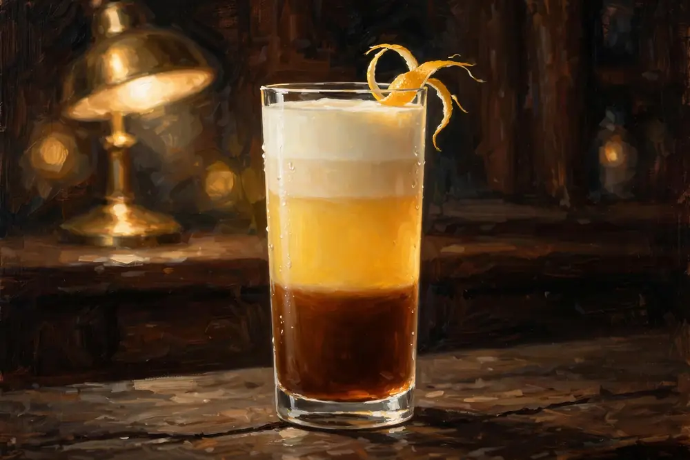
No.1 · 調酒
搖出冠軍的手
從協會會員做到理事長，調酒是他的起點，也是他站上評審席的底氣。
1995 年金樽盃男子冠軍 · 調酒技術士丙級 · 著《高分調酒吧》
Numbers · 重點數字
三本書的配方道數、兩個關鍵年份、一段騎出來的公益路。只放查得到來源的數字。
100 道
《咖啡教科書》咖啡配方
冰熱咖啡詳細配方，大境文化
141 道
《小茶包變身》人氣茶飲
小茶包變身 141 道人氣茶飲
126 道
《冰沙館》冰沙配方
冰沙館 126 道
1991 年
團隊以專業教學起步
卡堤咖啡官網〈關於卡堤〉
1999 年
卡堤咖啡有限公司創立
公司登記設立日期 1999-06-17
1,180 公里
單車環台勸募路線
2016 年，10 天完成
年份以公司登記與官網為準；配方道數以各書書名與書目資料為準。
Profile · 學經歷與認證
調酒師、評審、協會理事長、公司負責人——他的每一個身分，都在同一條吧台前後換位。
Four Crafts · 專長四藝
每一藝都寫成書、教成課，也陪著一間間店開張。

No.1 · 調酒
從協會會員做到理事長，調酒是他的起點，也是他站上評審席的底氣。
1995 年金樽盃男子冠軍 · 調酒技術士丙級 · 著《高分調酒吧》

No.2 · 咖啡
從沖煮、拉花到設備選配，咖啡的每一環他都寫進書裡，也帶進扶輪社的拉花體驗。
《咖啡教科書》100 道配方 · 6 大沖煮法 · 37 種拉花

No.3 · 茶飲
一包茶可以變出上百種飲品。店裡的茶包牆，就是他教學生認識茶的第一站。
《小茶包變身 141 道人氣茶飲》 · Tea Tang 台灣總代理

No.4 · 冰沙
水果、冰、比例與設備，冰沙館裡的每一道配方，都是能直接上菜單的成品。
《冰沙館 126 道》 · 冰沙機等設備供應
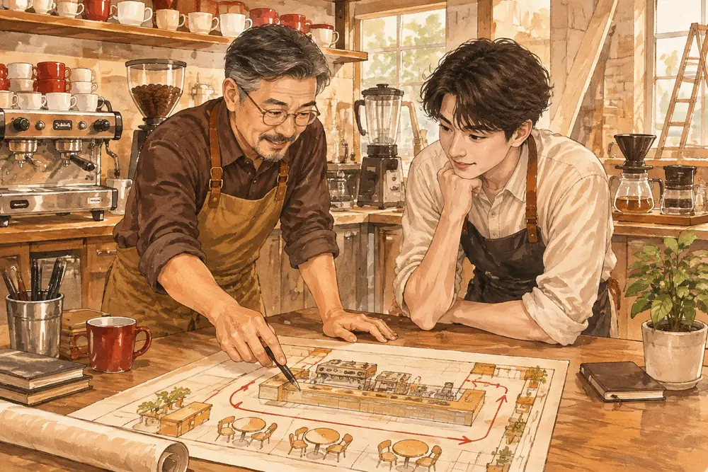
卡堤咖啡提供吧台動線規劃、技術培訓、菜單規劃與開店輔導，設備、器具、技術一次到位，並提供終身技術諮詢。對他來說，教會一個人開店，跟調好一杯酒一樣重要。
Brands · 代理品牌
從咖啡豆、茶葉、果露到咖啡機與烘豆機，卡堤咖啡代理的品牌，就是他每天在吧台上用的東西。
Cherry Rocher
果露 · 法國
Florapharm 芙蘿拉
天然花果茶 · 德國
Reneka
代理品牌
Fracino
代理品牌
Sonofresco
熱氣流式烘豆機
Pavin
極品義式咖啡 · 義大利
Tea Tang 堤騰
錫蘭風味茶 · 斯里蘭卡
KAV
飲品粉 · 美國
Timeline · 時間軸
八個年份，八個轉折。先教會別人，再談生意——這個順序從 1991 年到現在沒有變過。
1991
卡堤咖啡的工作團隊自 1991 年起，以專業教學與服務熱忱在餐飲界服務。先教會別人，再談生意。
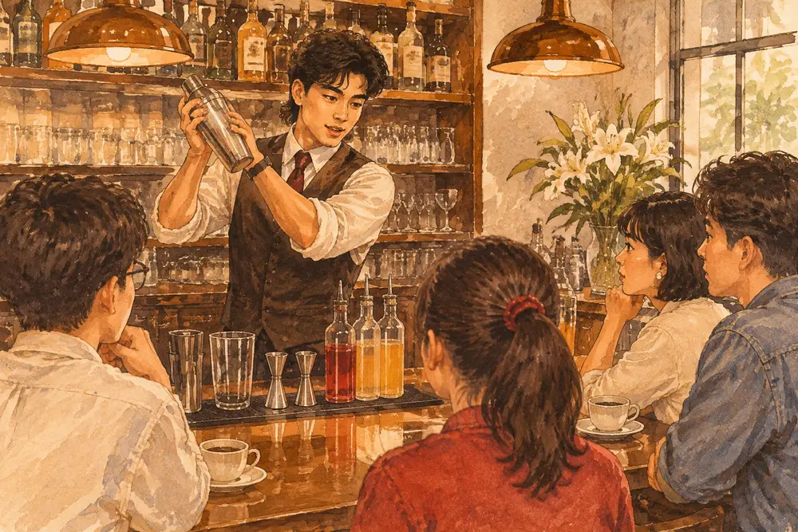
1992
正式踏進調酒圈，成為台北市調酒協會會員，日後一路做到監事、理事長。
1995
在吧台上拿下金樽盃調酒比賽男子冠軍，也取得中華民國調酒技術士丙級證照。
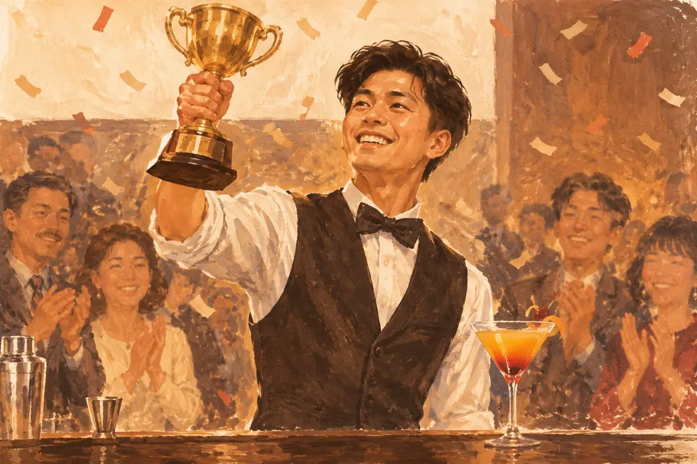
1999
1999 年 6 月 17 日，公司登記設立於桃園市桃園區龍安街，以 Quality（品質）為經營信念，提供餐飲設備、進口原物料與技術教學。
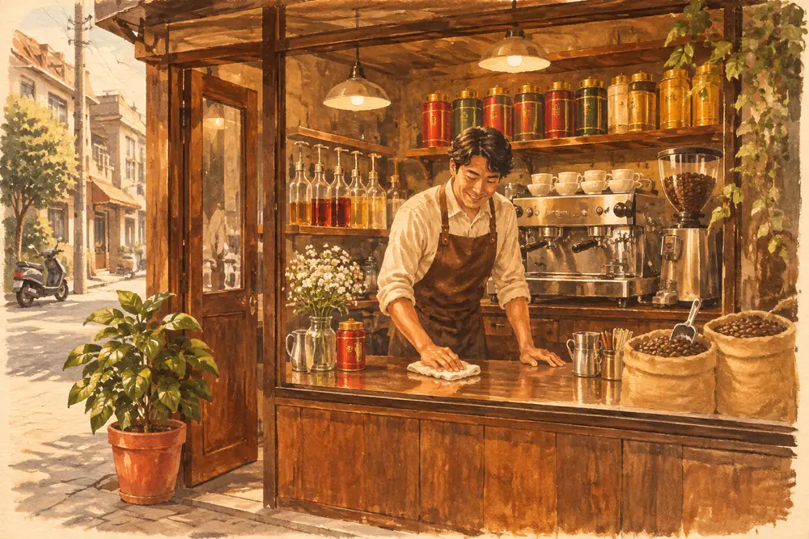
2010
當選台北市調酒協會理事長，並以理事長身分出席金樽盃國際調酒大賽。之後他也以理事長身分接受商業周刊 alive 訪問，談啤酒調酒的搭配與做法。
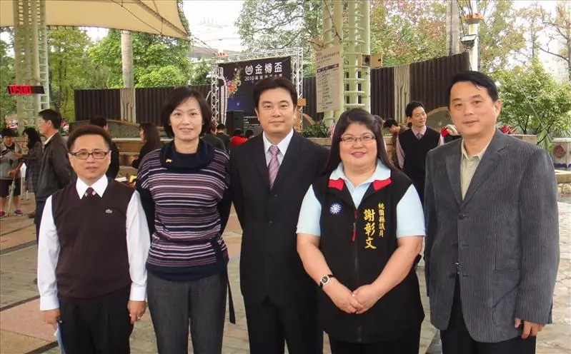
2016
與 50 位扶輪車手自新竹出發，用 10 天騎完 1,180 公里，為國際扶輪 3500 地區「環島鐵騎—服務人類」根除小兒麻痺募款。
出處：桃園蘆竹扶輪社2020
蘆竹扶輪社到卡堤餐敘，並參加拉花體驗。
出處：卡堤咖啡官網消息頁2023
桃園百齡扶輪社在卡堤舉行聚會。
出處：卡堤咖啡官網消息頁Books · 著作
調酒、茶飲、冰沙、咖啡，各一本。書裡的配方數字，就是他教課用的教材。
一個小茶包，能變出多少種飲品？這本書用 141 道配方回答，從基礎沖泡到店裡賣的人氣茶飲。
141 道人氣茶飲配方
126 道冰沙配方，水果、冰與比例的完整組合，寫給想把冰沙做成招牌的店家與愛好者。
126 道冰沙配方
100 道冰熱咖啡詳細配方，涵蓋 6 大沖煮法與 37 種拉花設計，隨書附 120 分鐘 DVD 示範。
100 道配方 · 6 大沖煮法 · 37 種拉花 · DVD 120 分鐘
寫給調酒愛好者的調酒專書，列於作者簡介的著作列表，與他的金樽盃經歷同源。
調酒配方與吧台功夫
書目資料以金石堂書目與作者簡介為準；《高分調酒吧》僅見於著作列表，出版資訊未載，書卡不放封面圖。
Giving Back · 公益足跡
騎車為根除小兒麻痺募款，開放店面帶扶輪社友體驗拉花，再把技術交給下一代。
10 天
環台天數
1,180 公里
勸募路線
50 位
同行扶輪車手
2 場
扶輪社在卡堤的活動
2016 · 環島鐵騎—服務人類
為國際扶輪 3500 地區慶祝扶輪基金百週年暨根除全球小兒麻痹，與 50 位車手自新竹出發，10 天騎完 1,180 公里，向社會大眾募款。
出處：桃園蘆竹扶輪社 Facebook
2020.08.17 · 蘆竹扶輪社
蘆竹扶輪社社友在卡堤餐敘，並參加拉花體驗。
出處：卡堤咖啡官網消息頁
2023.02.24 · 桃園百齡扶輪社
桃園百齡扶輪社在卡堤舉行聚會。
出處：卡堤咖啡官網消息頁
Gallery · 照片牆
點照片放大，用左右鍵或按鈕切換。照片均為拉花作品與教學示範，人物不標示為本人。
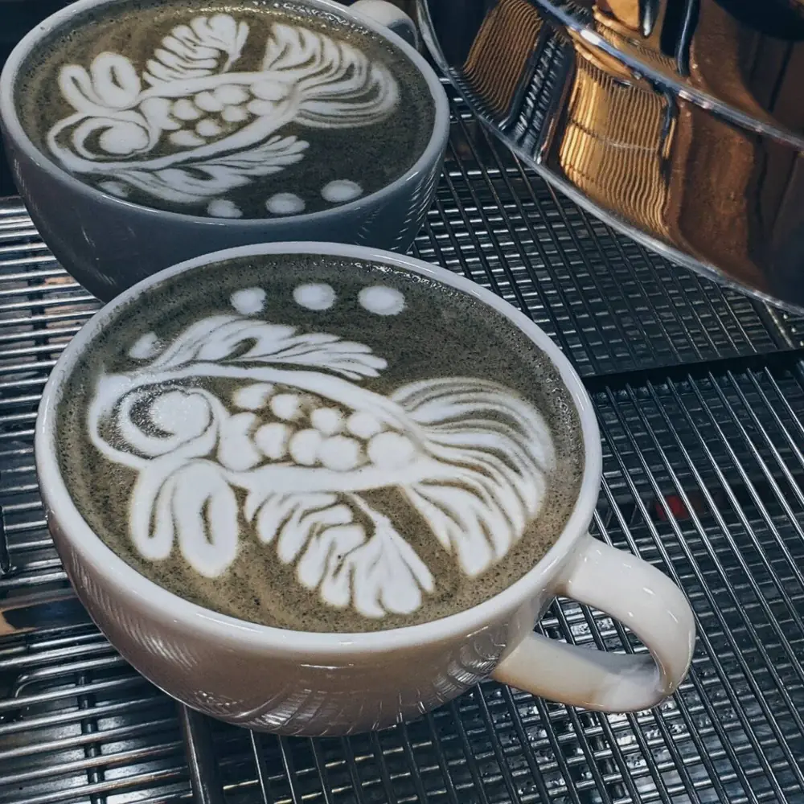
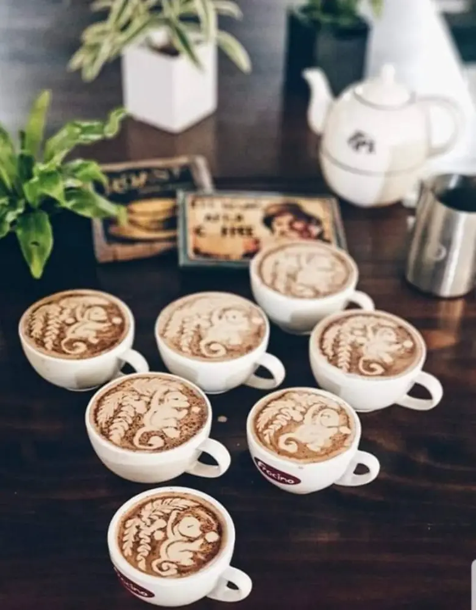
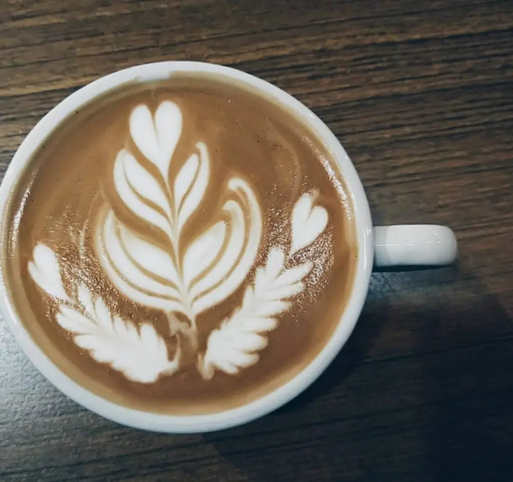
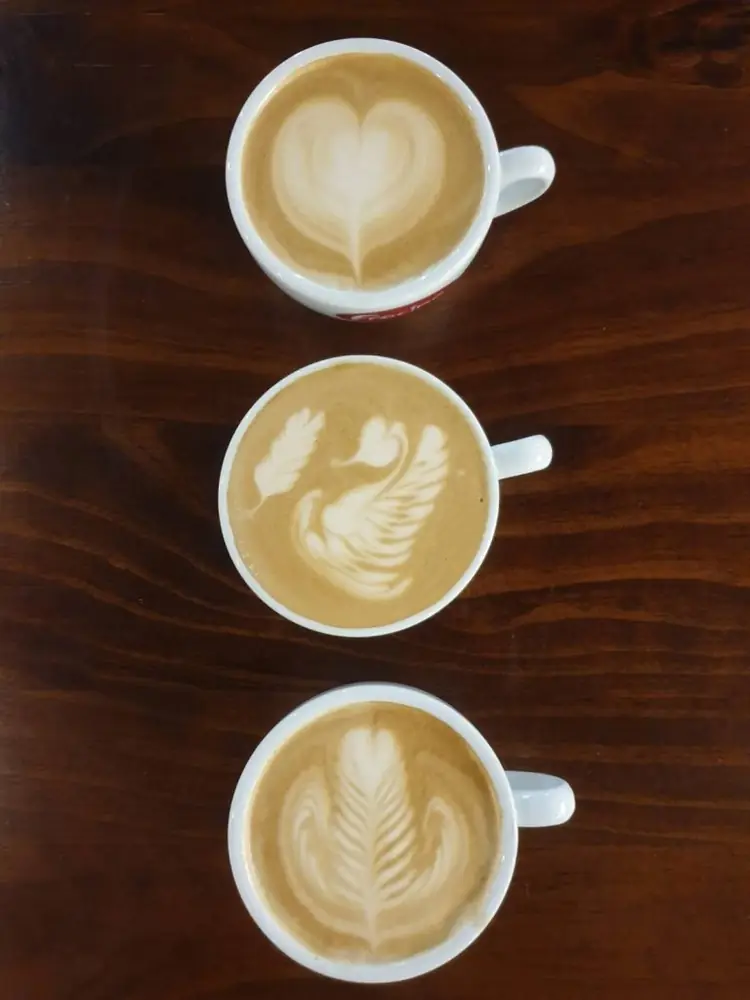
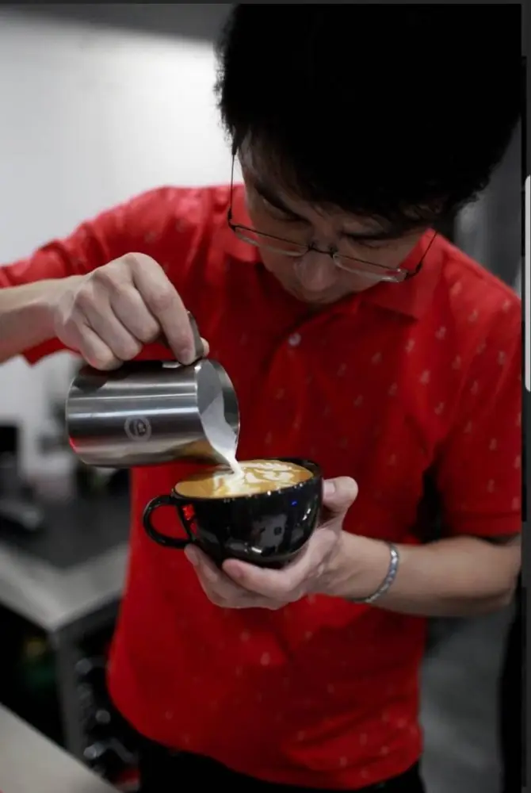
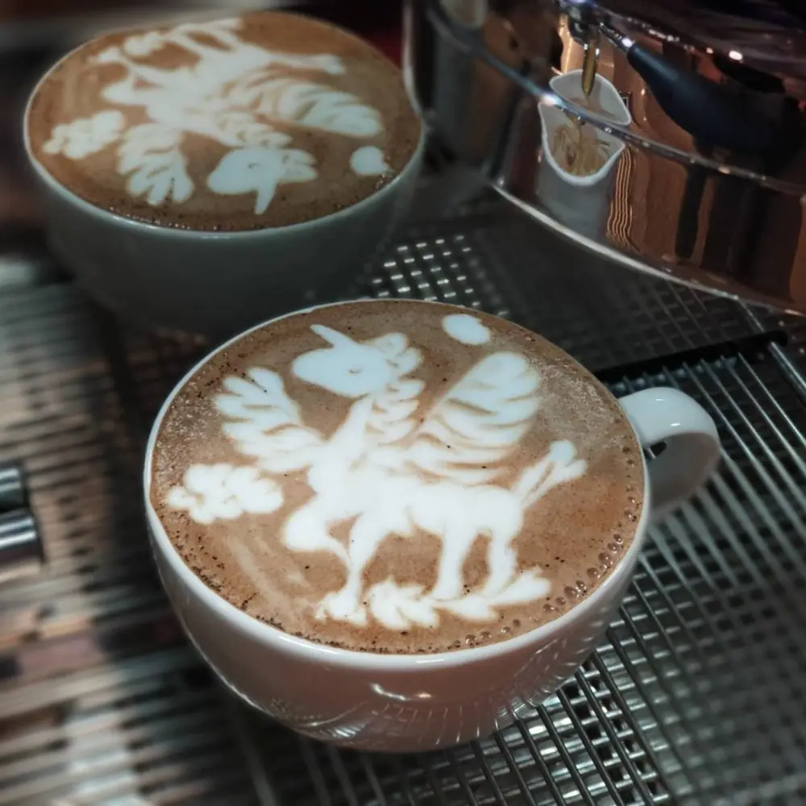
拉花教學分初階、中階、高階三級，圖型包括愛心、鬱金香、葉子、洋蔥心、天鵝與複雜組合圖（卡堤咖啡官網拉花教學頁）。
「怎樣喝咖啡，
就擁有怎樣的人生。」
地址
桃園市桃園區龍安街 189 號 1 樓
公司登記地址